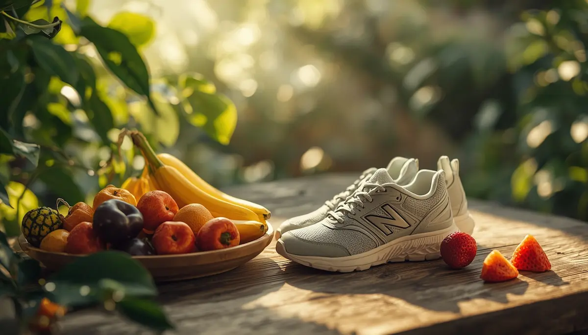

Alimentación y deporte como aliados naturales
Cuando pensamos en el día a día de un niño con diabetes, una de las mayores preocupaciones familiares suele girar en torno al plato de comida y a las restricciones en el parque. Sin embargo, las guías clínicas actuales y la experiencia de endocrinología pediátrica coinciden en un enfoque mucho más amable: la comida y el ejercicio no son enemigos a vigilar con lupa, sino los mejores aliados para crecer con energía, salud y plena libertad.
Comer en familia sin prohibiciones drásticas
Olvídate de la idea de que la mesa familiar debe convertirse en una lista interminable de prohibiciones absolutas. La clave nutricional se basa en una dieta equilibrada y compartida por todos en casa, aprendiendo a conocer cómo los hidratos de carbono impactan en el cuerpo. Esto permite que el menor pueda disfrutar de un cumpleaños, una merienda con amigos o una celebración escolar sin sentirse excluido ni cargar con el peso de la diferencia.
"La comida es nutrición, cultura y un momento de encuentro compartido; la diabetes nos enseña a entenderla mejor, pero nunca debe apagar el placer de disfrutar en familia."
El movimiento como fuente de vida y juego
El deporte y la actividad física son indispensables en la infancia. Correr, nadar, montar en bicicleta o jugar al fútbol forman parte natural de su desarrollo físico y emocional. Aunque la actividad física modifica los niveles de glucosa y requiere un pequeño margen de previsión con los hidratos o la insulina, nunca debe ser un motivo para frenar sus ganas de moverse. El objetivo es enseñarle a escuchar su cuerpo para que gane autonomía y seguridad en cualquier disciplina que elija.
Equilibrio cotidiano entre plato y zapatillas
Integrar la pauta nutricional y el deporte en la rutina diaria deja de ser un jeroglífico complejo en cuanto se convierte en un hábito compartido. Con el respaldo del equipo médico y un poco de práctica cotidiana, las familias descubren que la salud se construye desde la normalidad, permitiendo que los niños corran, jueguen y crezcan con absoluta confianza.
➔ Volver al índice de diabetes